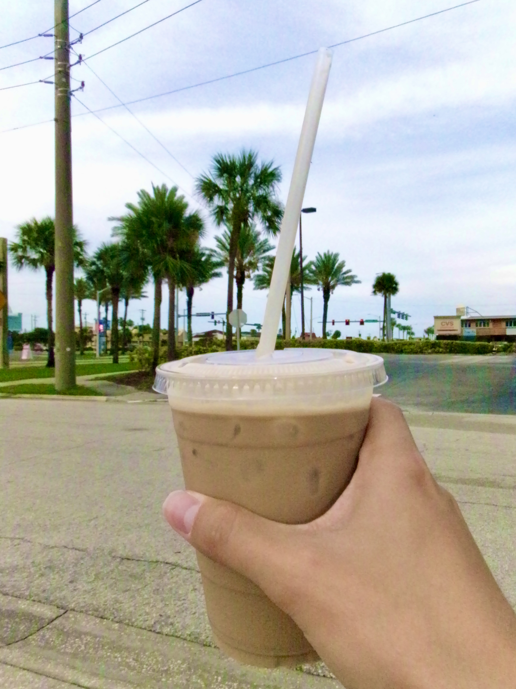
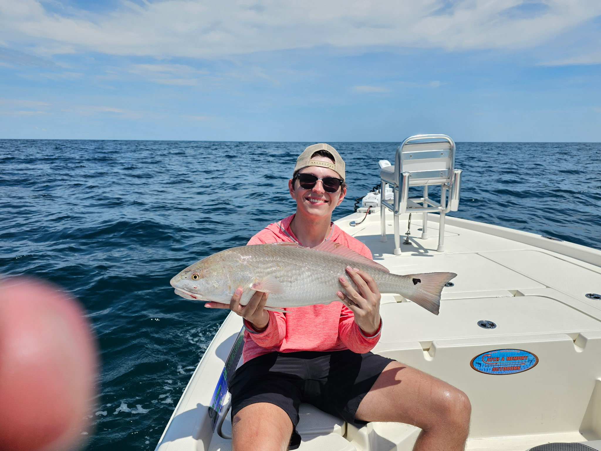
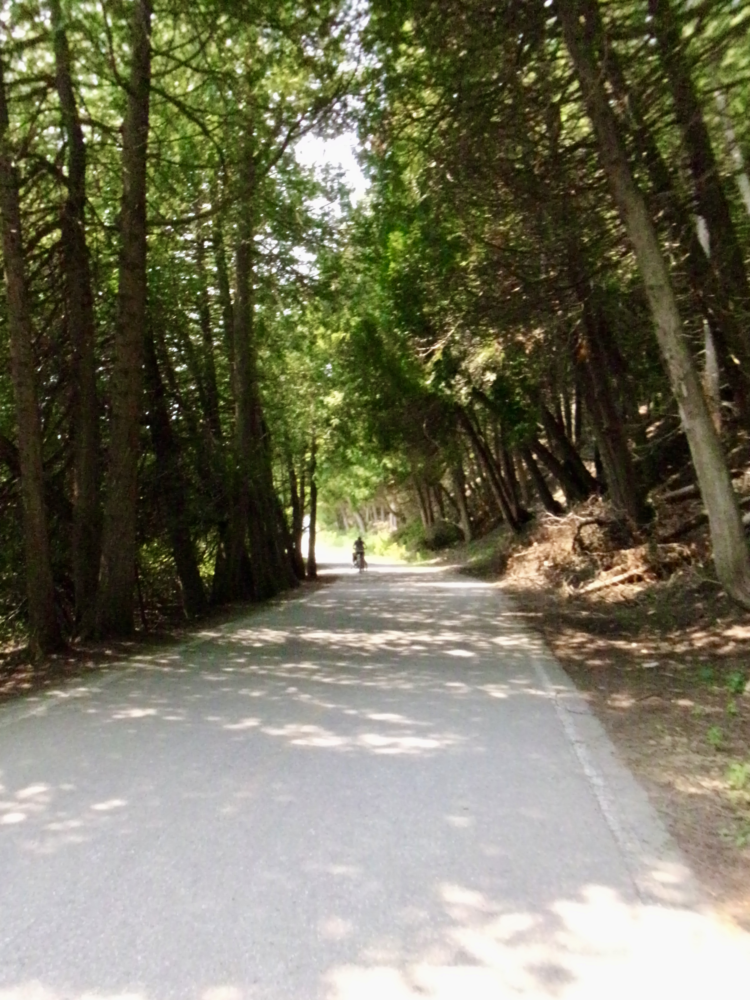
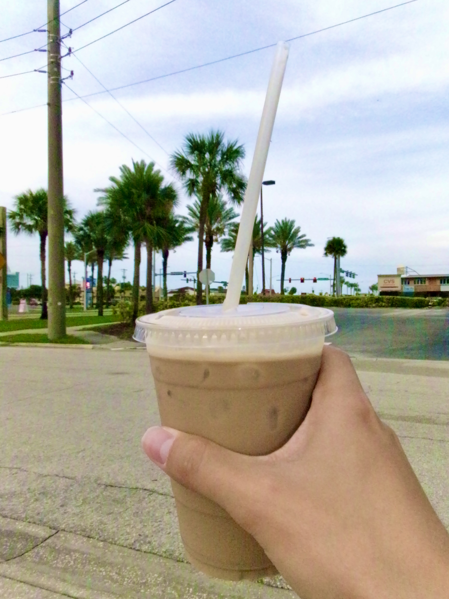
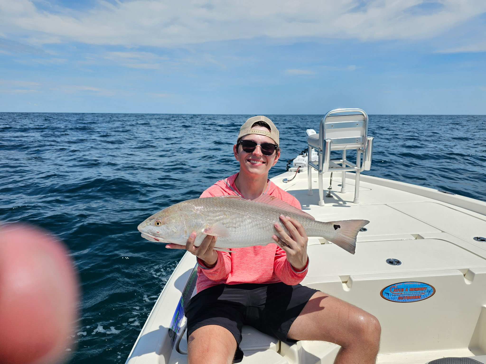
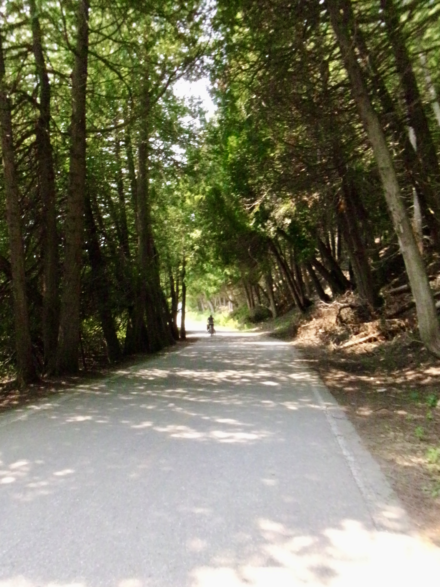

About Me
Hey! I'm Preston, a sophomore studying comp sci at the University of Michigan. My current classes focus on data structures, algorithms, and optimizing C++ code.
Outside of class, I've focused on building quant trading pipelines in Python and apps with SwiftUI. Aside from coding, I enjoy Formula 1, coffee, golf (though I'm terrible), and spending time with friends and family. I also love staying on top of new tech trends—you'll probably see me with some niche or new device, like my current favorite: my F1 simulator at home.
If any of that sounds interesting, please do reach out :)

 




